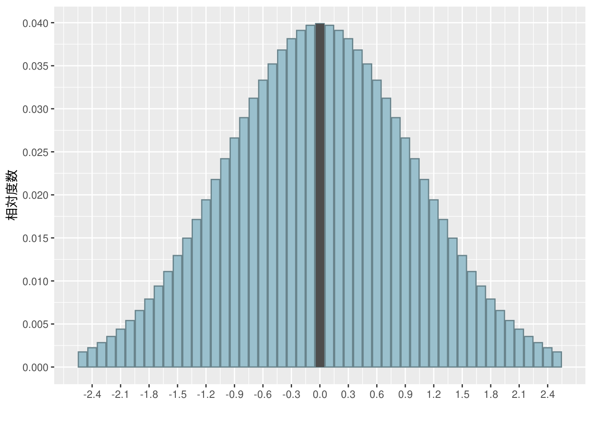

7.1 最もよく見かけるデータ分布
図表7-1 標準正規分布のヒストグラム
# 「密度×階級幅=相対度数」の関係を用いて密度関数から相対度数を求める
data <- tibble::tibble(x = seq(-2.5, 2.5, 0.1),
y = dnorm(x) * 0.1) %>%
dplyr::mutate(y = dplyr::if_else(x == 0.0, y, 0))
tibble::tibble(x = seq(-2.5, 2.5, 0.1),
y = dnorm(x) * 0.1) %>%
ggplot2::ggplot(ggplot2::aes(x = x, y = y)) +
ggplot2::geom_bar(stat = "identity",
fill = "lightblue3", colour = "lightblue4") +
ggplot2::geom_bar(ggplot2::aes(x, y), data = data,
stat = "identity", fill = "gray30") +
ggplot2::labs(x = "", y = "相対度数") +
ggplot2::scale_x_continuous(breaks = seq(-2.4, 2.4, 0.3)) +
ggplot2::scale_y_continuous(breaks = seq(0, 0.04, 0.005))